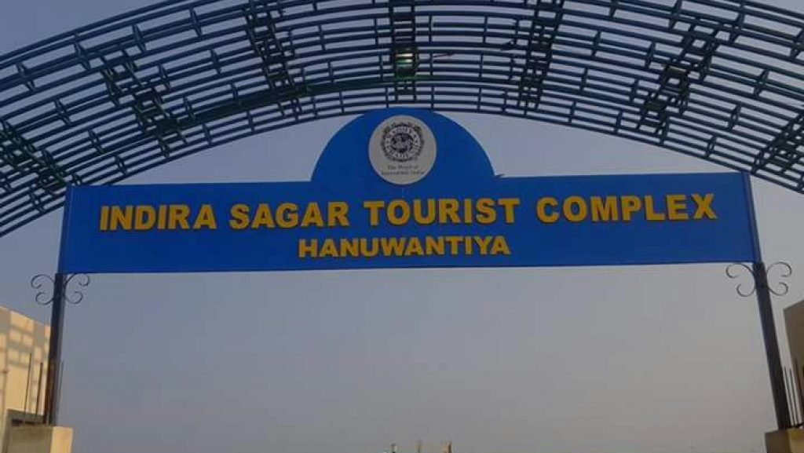
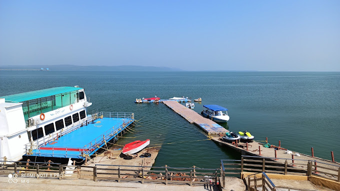
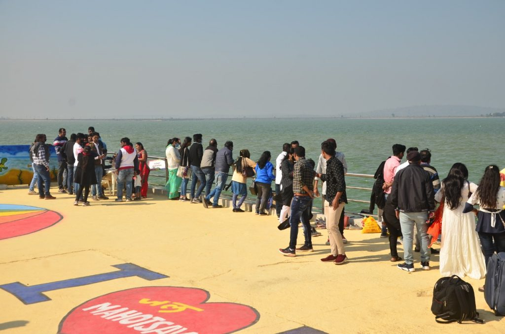
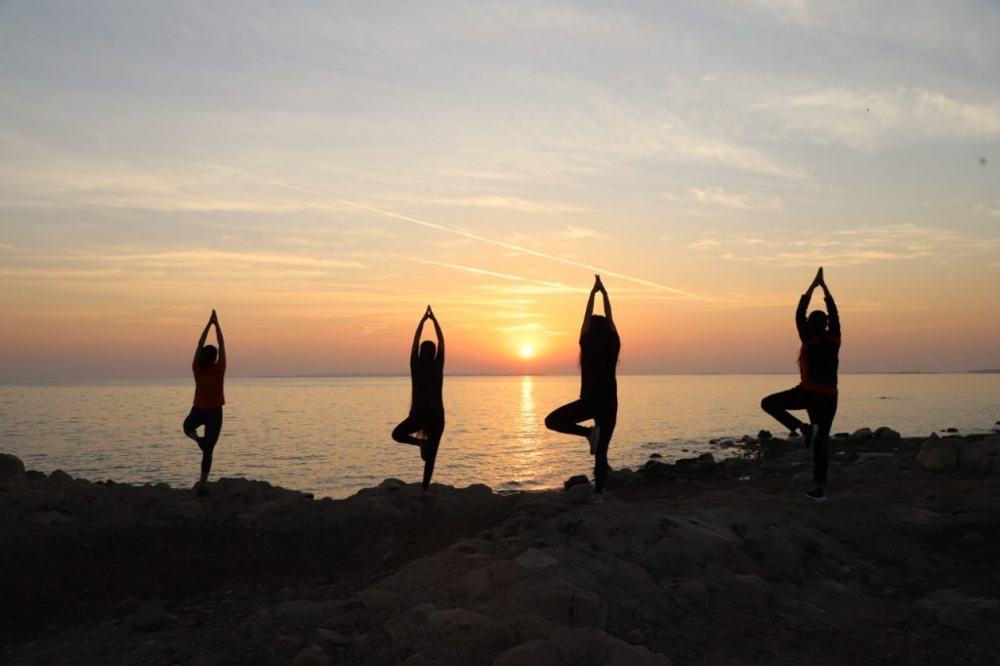

ABOUT INDIRA SAGAR DAM Indira Sagar Dam is a multipurpose dam project at Madhya Pradesh in Central India. It was built on Narmada river which flows from Central India to Western India. Project foundation stone was laid in year 1984 by Prime Minister of India but main-dam construction started in year 1992, many years later. It was completed in year 2003 and now in use. Its reservoir is counted among largest reservoirs of India with holding capacity of 12.22 billion cu.m. TOURISM
Hanuwantiya island is a newly introducted water tourism destination in Madhya Pradesh tourism. It is close to Khandwa town in Western Madhya Pradesh. It is developed & promoted by Madhya Pradesh Tourism Development Corporation. The name “Hanumantiya” is derived from local village name with same name which lies in Punasa Tehsil of Khandwa district in Madhya Pradesh. State Tourism Department found this region suitable for water tourism activity so decided to develop it in which they developed the boat-club, accommodation facility, ensured good road connectivity etc.
Backwater of Indira Sagar Dam forms a huge lake having enormous potential for tourism development. Hanumantiya is developed to exploit the backwater of this dam for tourism development in this region. Realizing this fact, Madhya Pradesh Tourism Department took initiative to develop the site and avail accommodation for tourists. It offers accommodation, restaurant and boating, cruise ride facility on backwater. For accommodation, only one hotel is available called “Hanuwantiya Tourist Complex” which is of MPSTDC. Surrounding area of dam is also good for nature tourism which includes birdwatching, mammals sighting. While visiting the Indore Tourist Circuit, one can include this water tourism destination also. It is just 140kms from Maheshwar and 95kms from Omkareshwar which shows how feasible to include it in tour plans.
   